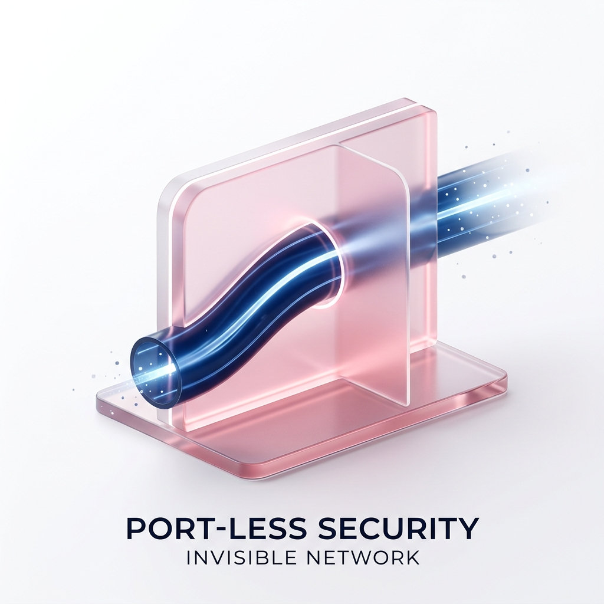
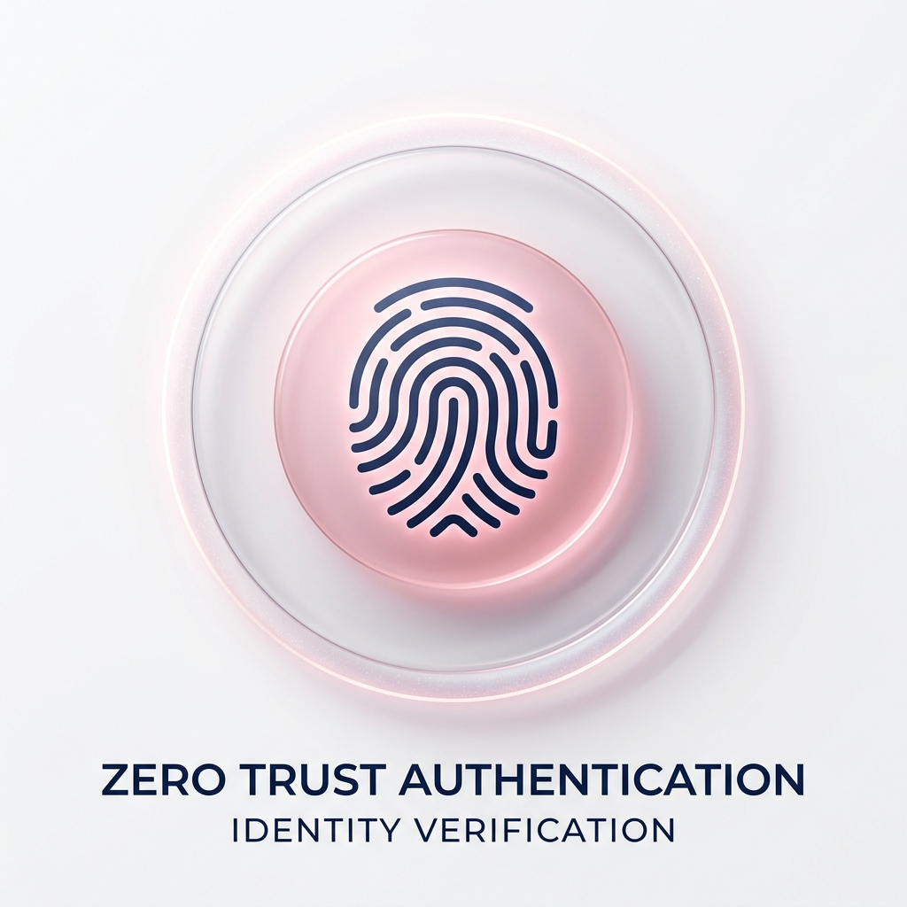
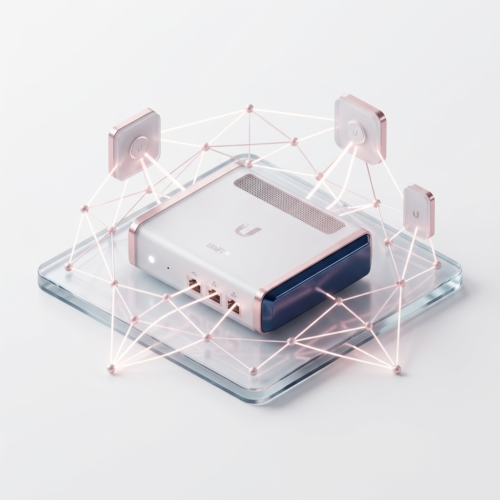
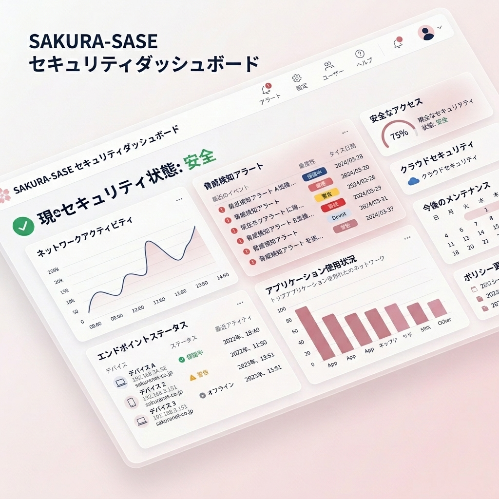

社内ネットワークを、
もっと安全に、もっと自由に。
UniFi UDM-Pro × Cloudflareが実現する次世代セキュア・リモートアクセス。
危険なポート開放を一切せず、圧倒的に強固なゼロトラスト環境を構築します。
従来型VPNの課題を、
SAKURA-SASEが解決します
ポート開放による脅威
VPN機器の脆弱性を狙った攻撃が増加中。ポートを外部に開けている限り、ランサムウェア等の標的にされるリスクが消えません。
通信遅延とボトルネック
全社員のトラフィックが本社のVPN機器に集中。回線パンクによるWeb会議の途切れや業務効率の低下が課題です。
複雑な運用と権限管理
入退社に伴うアカウント管理や、特定のサーバーだけアクセスさせたいといった細やかな制御が困難です。
次世代セキュリティの鍵、
「ゼロトラスト」と「SASE」
なぜ今、これまでの対策では不十分なのか。その理由を分かりやすく解説します。
ゼロトラストとは？
「何も信頼しない」が、最強の防御
これまでは「社内は安全、社外は危険」という境界線で守ってきました。しかし、テレワークの普及によりその境界は消滅しました。
ゼロトラストは、社内外を問わず「すべてのアクセスを一度疑い、その都度厳格に認証する」という考え方。SAKURA-SASEは、この最新の哲学を具現化しています。
SASE（サシー）とは？
ネットワークとセキュリティの完全統合
Secure Access Service Edgeの略称です。これまでバラバラだった「ネットワークの道筋」と「セキュリティの壁」をクラウド上でひとつに統合したモデルを指します。
拠点を増やすたびに高い機器を買う必要はありません。クラウドをセキュリティの入り口にすることで、「どこにいても、一貫した高い安全性」をスマートに実現できます。
専門エンジニアによる
フルマネージド運用
日々のネットワーク設計、設定変更、障害対応などをSAKURA-NETの専門エンジニアが代行。社内にIT専門要員がいなくても、常に最適で安全なネットワーク環境を維持できます。運用負荷をゼロにし、コア業務に集中できる環境を提供します。

インバウンドポート開放・完全不要
Cloudflare Tunnel技術を活用し、社内からクラウドへの「アウトバウンド通信」のみでセキュアなトンネルを確立。ファイアウォールに穴を開ける必要がないため、外部からの不正スキャンや攻撃を根本から無効化します。「見えないネットワーク」が最高の防御となります。

強固なゼロトラスト認証基盤
「一度繋がれば全て見れる」従来型VPNとは決別。SAKURA-SASEは、Microsoft Entra ID（旧Azure AD）やGoogle Workspace等のIdPとシームレスに連携。接続のたびに、ユーザーのアイデンティティ、デバイス証明書、多要素認証（MFA）を評価し、厳格なアクセス制御を実施します。

UniFi UDM-Proとのシームレスな統合
SAKURA-NETが提供するUniFiネットワーク環境のポテンシャルを最大化。社内のVLANやルーティングと連携し、特定のグループに所属するユーザーにだけ、特定のサーバー（ファイルサーバーや複合機など）へのアクセスを許可する「マイクロセグメンテーション」を実現します。

直感的な日本語ダッシュボード
「SAKURA Security Portal」
Wazuhの強力なセキュリティエンジンをベースにした、完全日本語対応の独自管理ポータルを提供。「今、何が起きているか」を専門知識なしでも直感的に把握できます。脅威の検知状況、端末の健全性、ネットワーク負荷などを美しく可視化し、経営判断を支えるインテリジェンスを提供します。
導入のメリット
SAKURA-SASEが、企業のネットワークに安心と効率をもたらします。
導入の手軽さ
ヒアリングシートに記入するだけで、短期間で手軽に次世代ネットワークセキュリティを構築できます。複雑な構築作業はすべてお任せください。
コスト削減
初期設定から運用・管理までがサービス費用にオールインワンで含まれています。個別導入に比べ、運用負荷とコストを大幅に抑えることが可能です。
感染拡大の防止
万が一端末がマルウェアに侵入されても、フラットな社内LANとは異なり、他拠点や重要システムへの「感染を拡げない」アクセス制御が可能です。